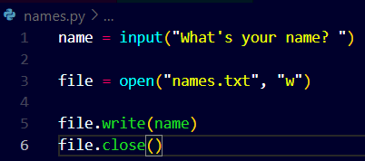

- Handling files with python is interesting as we can manipulate data using programming.
- For example, suppose we want user's name to be stored in a file.
- We can do this using the open() function of python, it typically opens a file for us and writes the content of whatever we have assigned to it.
- For instance see here, we will create a variable and ask for user's name,
- Then we use the open() function to create a new names.txt and give it the write permission as weare going to write user's name to it.
- Then we need to store the open function in a variable to be able to easily access it.
- Now we use the write function to write into the file using the input variable.
- And finally we need to close the file.


The output looks missing I guess? No actually python has created a new text file named names.txt see..

Now if we again run the python of names.py then Python will again create a new file and write the name inside it, this means the existing file will be overwritten by the new name. See..


What can we do to solve this is we need to append the names into the file so that new names get added to the file after the old ones!
Watch how we do it..


Look the change we have made in the code, is only the method or permission given to python that is append instead of write.
Now the program successfully appends new names into the file but what exactly have we done wrong as the names seem to get appended exactly at the end of the previous one.


Watch now the code looks much cleaner.
Now it seems that sometimes when we forget to close the file that data might get lost or corrupted, so to avoid it we need to close the file always.
But it is possible to forget to close the file and to avoid this we use the "with" function of python that particularly automates the procedure of opening and closing the file for us.
Watch how we use the with function...

- Now what this does is pretty the same but it automates the procedure of opening and closing the file after the code in the indentaion is successfully executed.
- Notice how we have declared the variable after the open function, it says,"perform the operationof opening the file{with name given} and then assign it to the variable assigned to it. It will automatically close once there is no code remaining in the indentation part".
Now, assume we have all these names from the desired files but now we want to read these names. Here's how we do it.


Now it seems that all the names are displayed perfectly but they doesn't seem to be sorted.
See how we can sort them.


We can also reverse the order!


- Now consider a situation where we need to include the house names of the students.
- In that case we use a csv file which is most commonly used when we need to store data in key:value pair.
- See how we use indexing and use the rstrip and split functions to split the contents in a single line as a row and column pair.


- Now if we want to change or edit some file content or just a single name which is not possible we need to create our own program for it.
- We will see it in future.
- For now,
 Works the same , it is a more precise way to carr out the same opration.
Works the same , it is a more precise way to carr out the same opration.See this sorted result, we sort the result using the names of the students.


See how we can do the same thing in different ways , we use different methods to do the sam thing.
This time we are making dictionaries to store names and houses.


If we create an empty dictionary as in line 6 above, and then immediately creating keys and values then we can simply do this all at once, see how..

We need to sort the result, as in here we have dictionaries inside lists, so how would we sort dictionaries inside of lists.
We create a new function named "get_name", this function will just return the name ofthe student and that's it.!!
- Here, python allows us to pass a function as a value inside another function, so we can pass the get_name function which only & only fetches the names of students, as a value inside the sorted function.
- This is important because we need to specify it to the sorted function what exactly to sort, i.e., the names of the students.
- So here we pass the get_name function inside the sorted function.
- Tada!! we have a list of students, that is sorted according to their names.


We can also reverse this!!


We can also sort this based on the houses of the respective students.


We can reverse sort based on houses.


Here is another interesting feature of python, the no name function, i.e., the "lambda" function which has no name and can actually be recognised with the help of the keyword lambda itself. More specifically Anonymous functions.

It works the same and we can sort it based on the name and house.
All this seems pretty good while handling small amount of data , but now imagine storing the addresses of the students in the csv files, this will create errors in our code as we used the comma[,] as a separator.
- So if there is a comma in the data then it will exceed the maximum amount of values to unpack and then throw an error
- Here we came to know anout the csv library present in Python to handle the data in csv files.
- The csv module has a built in function, reader which reads the file.


See how despite of the commas in the address the program only recognises the outer ones.
Here is another interesting thing we can do is write the name os the column into the csv file, so that we can use it further to classify it.
Watch how it is done.

Things to keep in mind:
- Dont give spaces after commas in the csv file, it generates a key error which is hard to find.
- The DictReader iterates over and reads the dictionary more specifically than a list.
- To use this feature we need to add a little hint in the top of the csv file.
- Result is pretty the same.


Now this might happen that our csv file might be changed by someone, well in that case if the python file remains unaltered then,
- If the column names are updated accoding to the data the result remains same.
- The DictReader accesses the key and not the indices no matter where it is located in the csv file, only at the top-most position
Now while executing this code I encuntered a problem whose cause was unknown to me, actually I still don't know the actual cuase behind it, When I gave Input in the terminal it writes the input name and home in the csv file but it writes that and then leaves one line extra under it.
Watch how...
 Like this..
Like this..No to solve this I had to take help of another python keyword namely the "newline". It seemly restricts the use of any empty lines in the program.